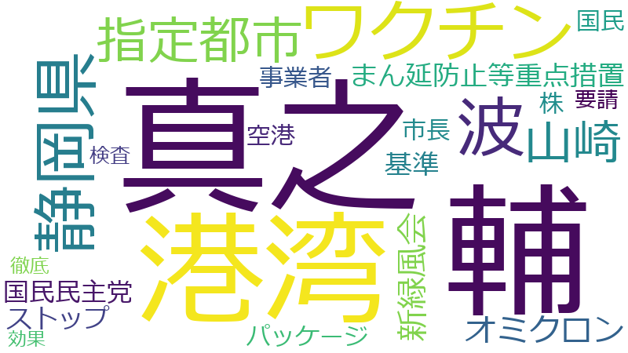

ワクチン 、基準 、国民 、波 、事業者 、港湾 、指定都市 、要請 、静岡県 、まん延防止等重点措置 、オミクロン 、ストップ 、パッケージ 、効果 、国民民主党 、山崎 、市長 、徹底 、新緑風会 、株 、検査 、真之 、空港 、輔
真之 、輔 、港湾 、ワクチン 、波 、静岡県 、指定都市 、山崎 、オミクロン 、新緑風会 、まん延防止等重点措置 、基準 、国民民主党 、ストップ 、市長 、パッケージ 、株 、国民 、空港 、事業者 、要請 、検査 、徹底 、効果